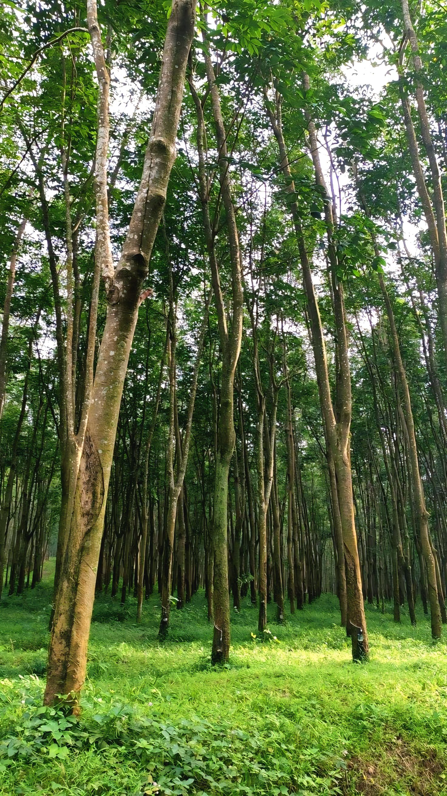
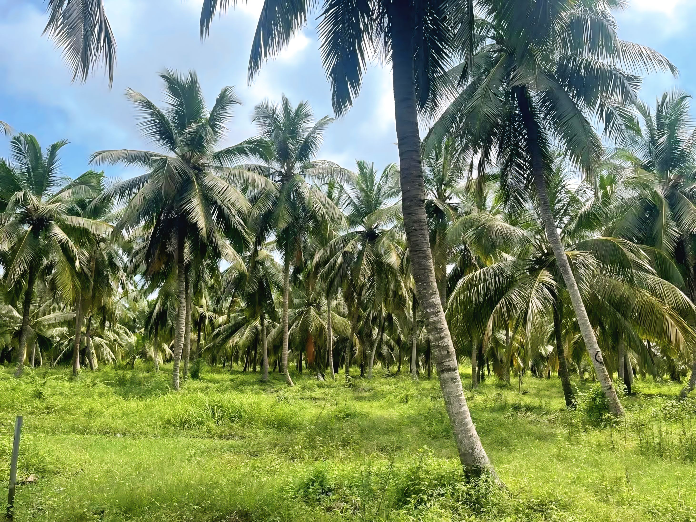
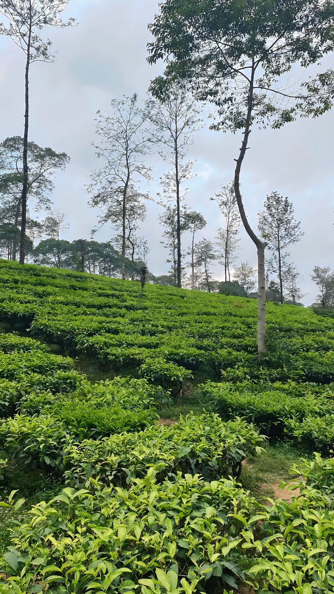
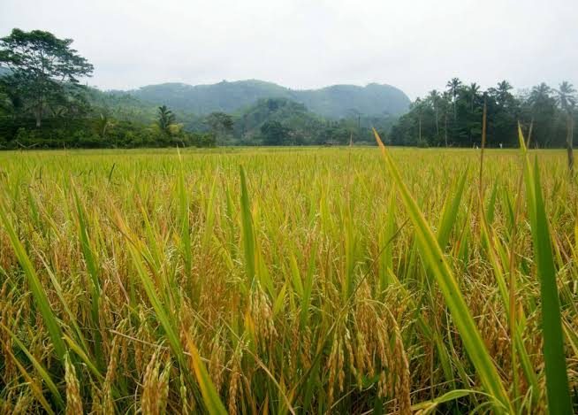
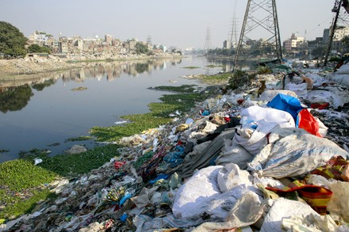

AGRICULTURAL ASPECTS

Rubber

coconut
Mainly Tea, Rubber,
Coconut & paddy.
Minor crops like
Paper,Cloves & coffee
are also grown.
Coconut & paddy.
Minor crops like
Paper,Cloves & coffee
are also grown.

Tea

paddy
ISSUES & CHALLENGES
TRAFFIC CONGESTION IN TOWN CENTER
FLOOD & HEAVY RAIN
SCARCITY OF JOBS
DRAINAGE & WASTE MANAGEMENT ISSUES

